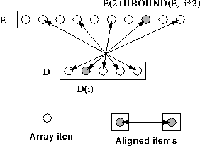

Can reverse an array before alignment:
REAL, DIMENSION(5) :: D
REAL, DIMENSION(10) :: E
!HPF$ ALIGN D(:) WITH E(UBOUND(E)::-2)
This says:  i, elements E(2+UBOUND(E)-i*2) and
D(i) are local, for example, D(1) and
E(10). Alignment could also be written:
i, elements E(2+UBOUND(E)-i*2) and
D(i) are local, for example, D(1) and
E(10). Alignment could also be written:
!HPF$ ALIGN D(i) WITH E(2+UBOUND(E)-i*2)

This alignment is suitable for,
D = D + E(10:1:-2) ! All local
For more information, click here